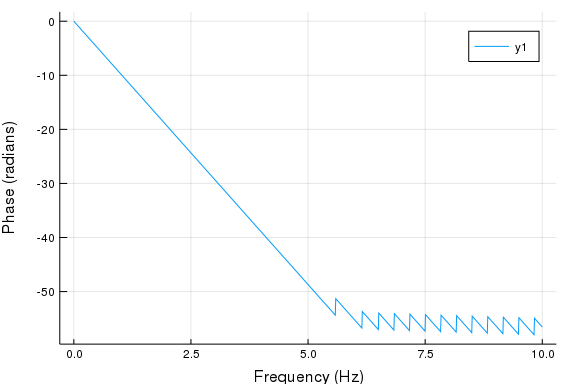

Introduction
This an example of a julia script that can be published using
Weave.
The script can be executed normally using Julia
or published to HTML or pdf with Weave.
Text is written in markdown in lines starting with "#' " and code
is executed and results are included in the published document.
Notice that you don't need to define chunk options, but you can using
#+. just before code e.g. #+ term=True, caption='Fancy plots.'.
If you're viewing the published version have a look at the
source to see the markup.
FIR Filter Design
We'll implement lowpass, highpass and ' bandpass FIR filters. If you want to read more about DSP I highly recommend The Scientist and Engineer's Guide to Digital Signal Processing which is freely available online.
Calculating frequency response
DSP.jl package doesn't (yet) have a method to calculate the the frequency response of a FIR filter so we define it:
using Plots, DSP gr() function FIRfreqz(b::Array, w = range(0, stop=π, length=1024)) n = length(w) h = Array{ComplexF32}(undef, n) sw = 0 for i = 1:n for j = 1:length(b) sw += b[j]*exp(-im*w[i])^-j end h[i] = sw sw = 0 end return h end ~~~~~~~~~~~~~
FIRfreqz (generic function with 2 methods) ~~~~
Design Lowpass FIR filter
Designing a lowpass FIR filter is very simple to do with DSP.jl, all you need to do is to define the window length, cut off frequency and the window. We will define a lowpass filter with cut off frequency at 5Hz for a signal sampled at 20 Hz. We will use the Hamming window, which is defined as: $w(n) = \alpha - \beta\cos\frac{2\pi n}{N-1}$, where $\alpha=0.54$ and $\beta=0.46$
~~~~{.julia} fs = 20 f = digitalfilter(Lowpass(5, fs = fs), FIRWindow(hamming(61))) w = range(0, stop=pi, length=1024) h = FIRfreqz(f, w)
## Plot the frequency and impulse response
The next code chunk is executed in term mode, see the [script](FIR_design.jl) for syntax.
~~~~{.julia}
julia> h_db = log10.(abs.(h));
julia> ws = w/pi*(fs/2)
0.0:0.009775171065493646:10.0
~~~~{.julia} plot(ws, h_db, xlabel = "Frequency (Hz)", ylabel = "Magnitude (db)")
\
And again with default options
~~~~{.julia}
h_phase = unwrap(-atan.(imag.(h),real.(h)))
plot(ws, h_phase,
xlabel = "Frequency (Hz)", ylabel = "Phase (radians)")
\